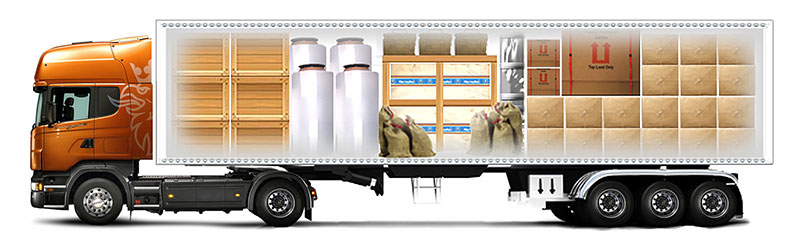

Главная⁄Услуги⁄Консолидация грузов
Консолидация грузов
Консолидация грузов от ТМС: поможем сэкономить время и деньги.
Консолидация сборных грузов – это компоновка относительно небольших партий от различный отправителей c целью дальнейшая их перевозки единым транспортом. Такой подход позволяет на порядок снизить общие затраты и ускорить сам процесс доставки. Действительно, было бы очень неразумно заказывать на единичную партию карго целую фуру, оплачивать ее в полном размере да еще и ждать оформления вороха побочных бумаг.
В качестве транспорта при перевозке консолидированных грузов чаще всего выступает фура с внутренним объемом от 75 до 135 м3 или морской ISO-контейнер длинной 20 или 40 футов. Формирование основной партии происходит на консолидационном складе, однако в дальнейшем также возможна частичная переукомлектация по ходу маршрута.
При перевозке сборных грузов многое зависит от опыта специалистов по логистике. Внутреннее пространство фуры необходимо организовать таким образом, чтобы вся партия была размещена максимально компактно, но не в ущерб безопасности транспортировки. В зависимости от типа груза может потребоваться создание особой температуры, дополнительная упаковка, усиленная фиксация внутри контейнера и т.д. Все это должно быть продумано еще на стадии формирования погрузочной очереди и определения маршрута следования.
Как осуществляется консолидация грузов?
Консолидация грузов используется при перевозках наземным, морским и воздушным транспортом, причем общая схема ее проведения в целом идентична:
- Партия карго пребывает на склад ТМС и хранится там до появления нужного объема других заказов по заданному маршруту.
- Груз отправляется на консолидационный терминал, где проверяется его сохранность, после чего проводится подготовка к транспортировке, наносится маркировка.
- Перед непосредственной перевозкой товар страхуется, заполняются товаросопроводительные документы.
- Груз пребывает на склад по месту назначения, после чего его с минимальной задержкой передают заказчику.
В стоимость консолидации грузов входит:
- хранение на складе;
- упаковка и подготовка перед транспортировкой;
- маркирование вспомогательными обозначениями (например, "хрупкий груз");
- оформление таможенных, товаросопроводительных и иных документов.
Ваши выгоды при работе с Транс Магистраль Сервис.
При общей простоте схемы консолидации грузов в ней имеется множество важнейших нюансов. Наши специалисты благодаря своему богатому опыту знакомы со всеми тонкостями сборных перевозок не понаслышке, что позволяет обеспечить клиентам ТМС ряд важнейших преимуществ:
- Высочайшая скорость доставки – обширная база консолидационных складов позволяет быстро собирать партии из наиболее востребованных регионов и отправлять их практически без задержки.
- Максимальная экономия – сборные перевозки помогут снизить затраты на доставку минимум в 2 раза.
- Любые виды грузов – мы знаем тонкости бережного обращения и правильного оформления широчайшего спектра товаров и оборудования, поэтому наверняка сможем Вам помочь.
- Упрощение документооборота – с нами Вы сэкономите кучу времени и нервов на оформлении сопроводительной, транспортной, таможенной и иной документации.
- Гарантия сохранности – собственная погрузочно-разгрузочная техника и современное складское оборудование вкупе с богатым опытом сотрудников позволяют обеспечить сохранность даже самого хрупкого груза.
Цена консолидации оговаривается с каждым заказчиком индивидуально – позвоните нашему менеджеру прямо сейчас и в течение 5 минут он назовет конечную стоимость перевозки.